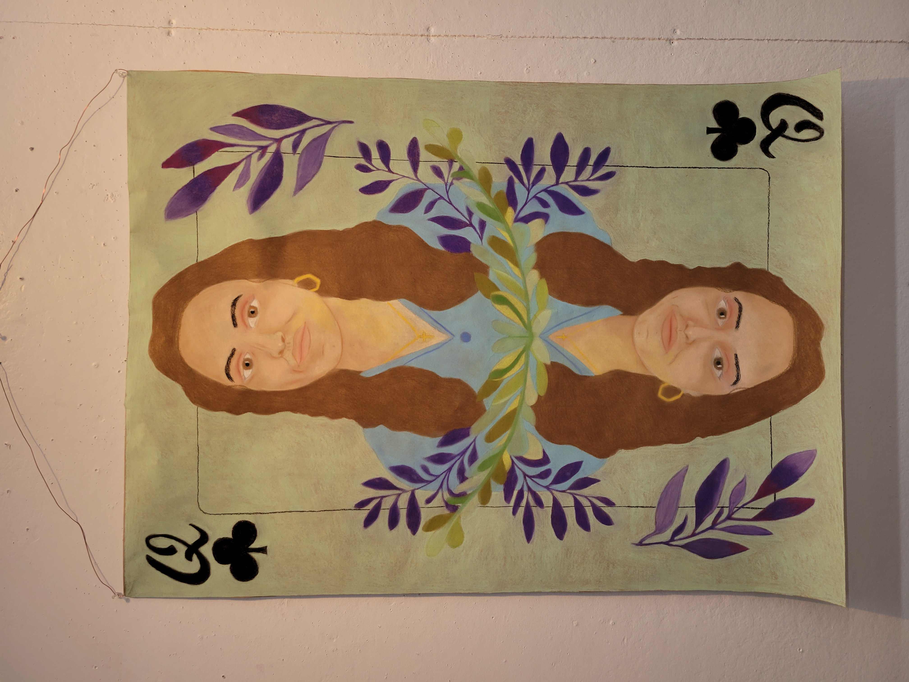
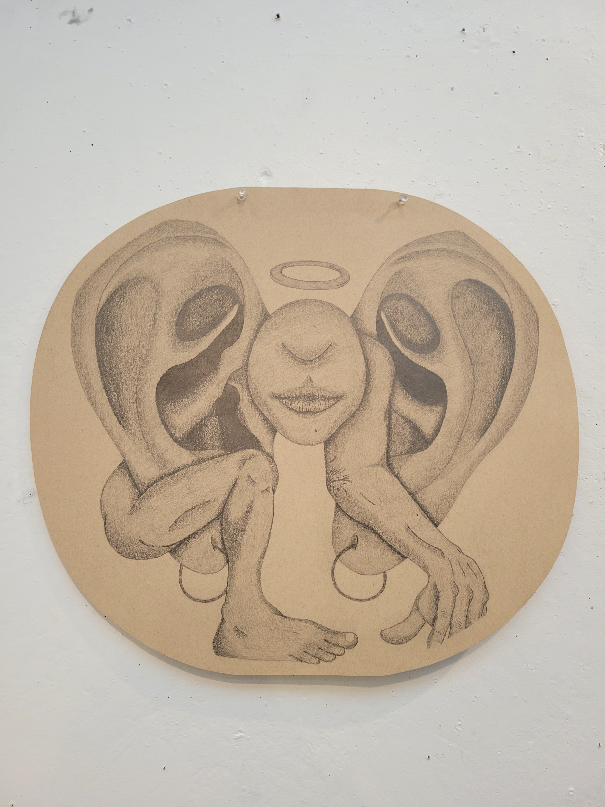
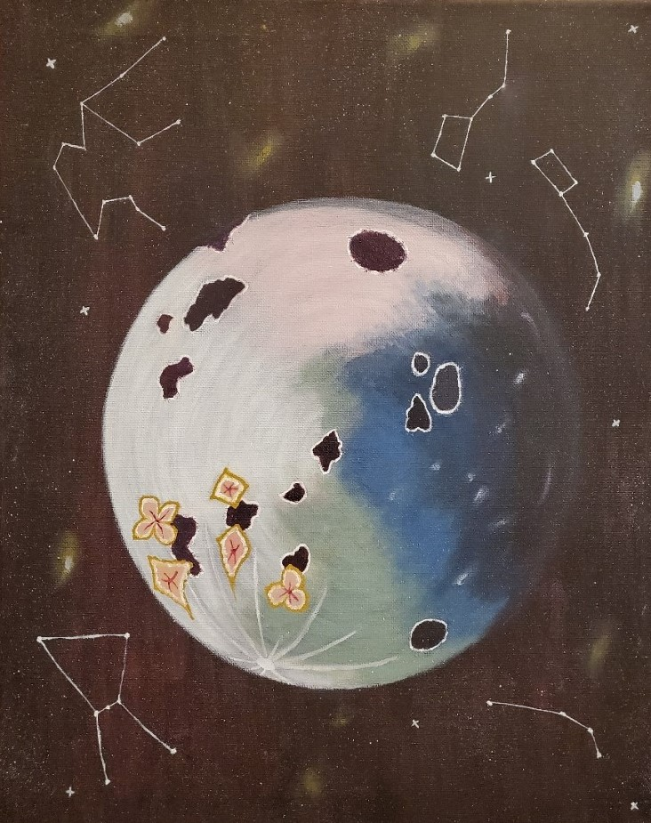
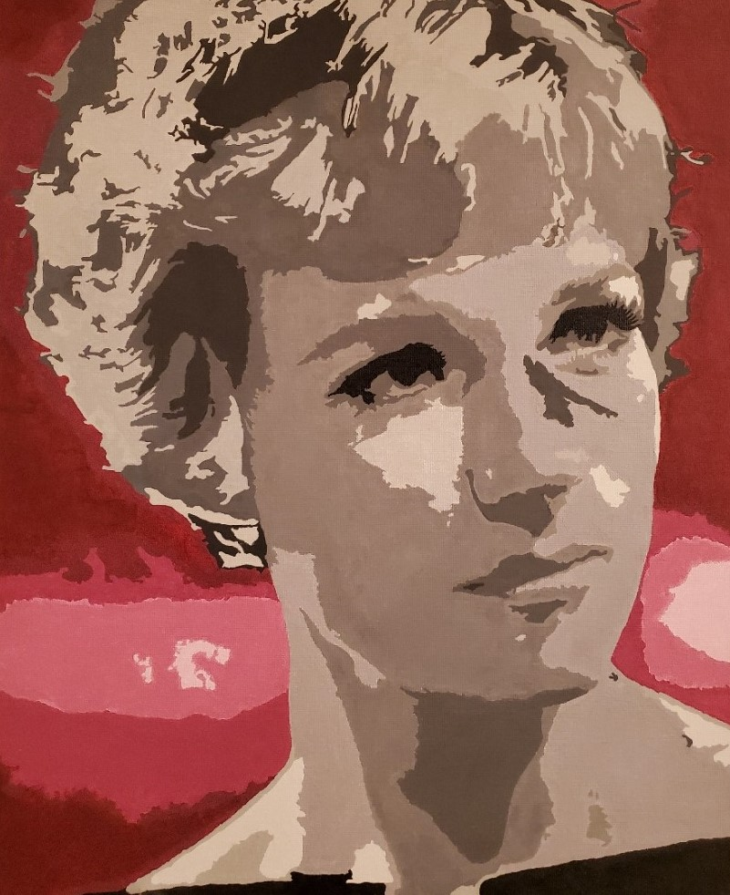
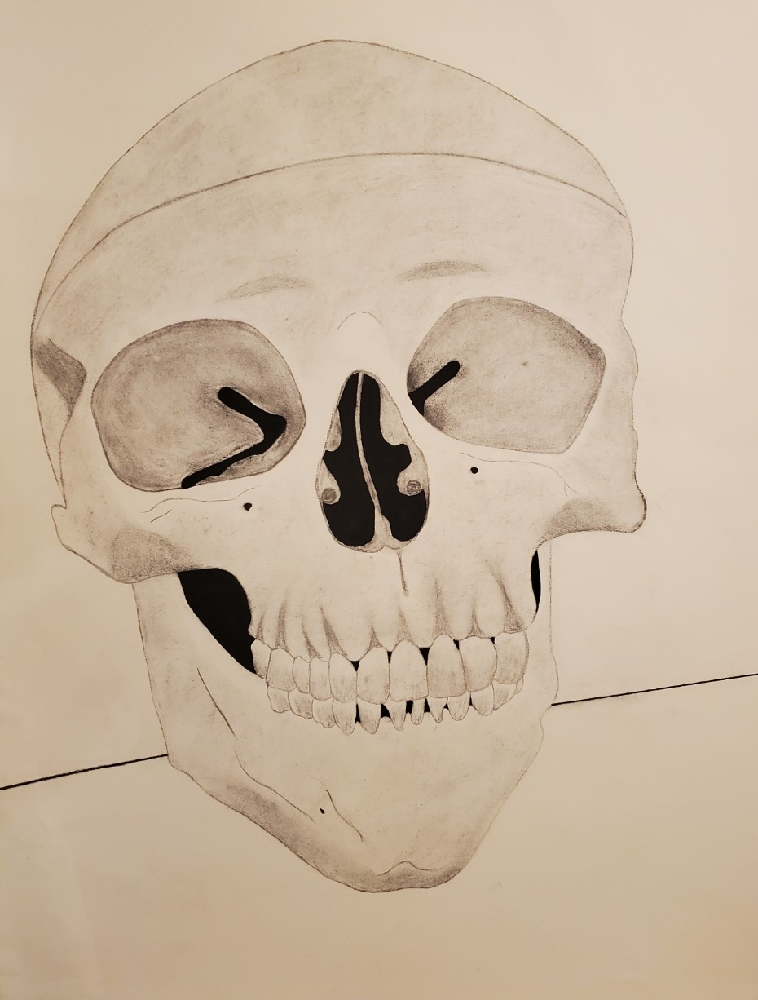
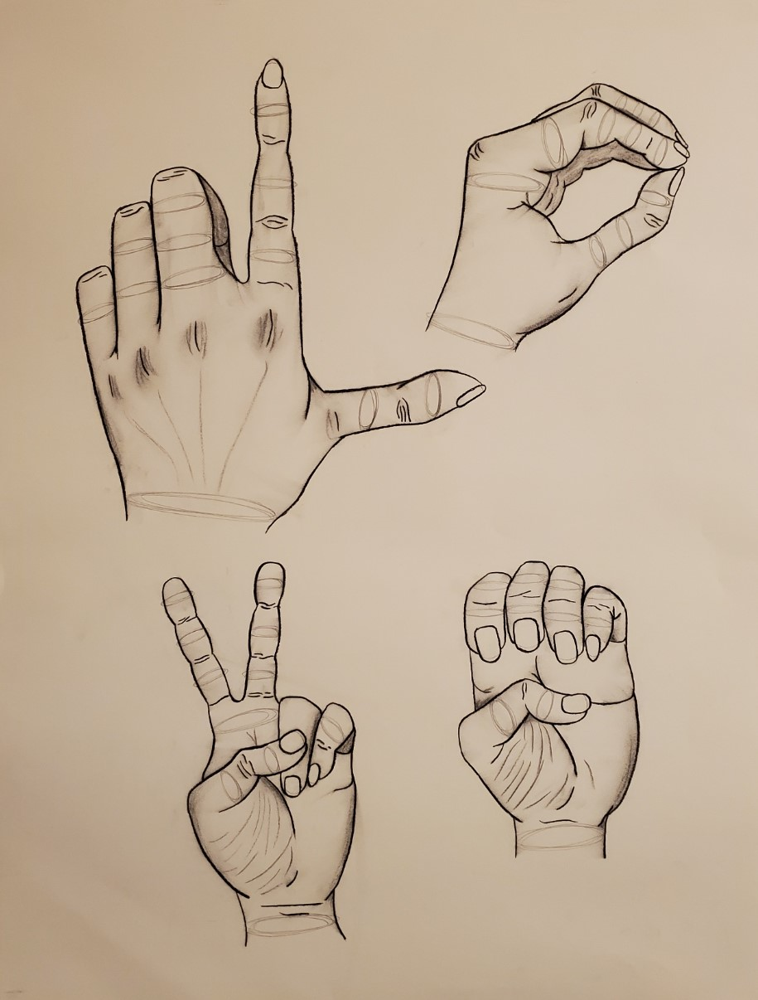
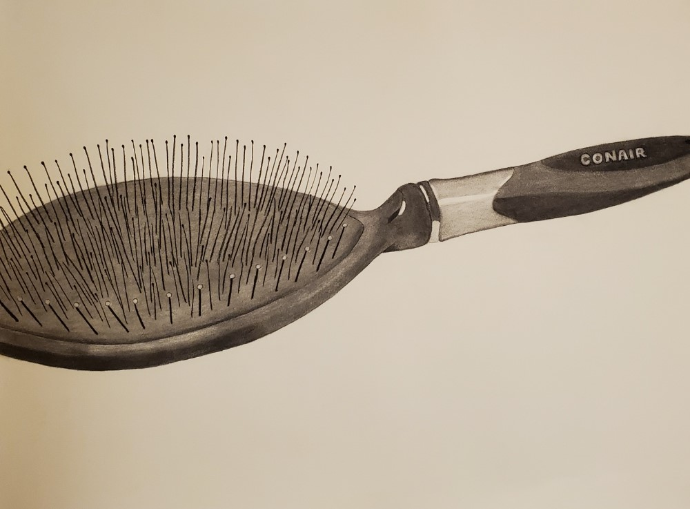
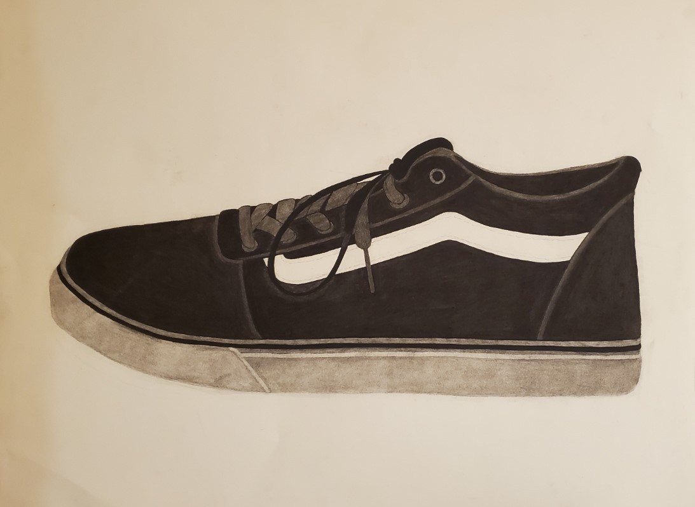

Drawings + Paintings
Beginning Drawing and Painting Coursework, 2019-2022
A series of artwork created during the Beginning Drawing I, Beginning Drawing II, and Beginning Painting I courses offered at the Herron School of Art. Most paintings were created using oil-based paints and fine brushes. Most drawings were created using charcoal sticks and graphite pencils.
Beginning Drawing II

3 Object Metal/Glass/Wood Drawing

Odd View Self Portrait Drawing
My Playing Card Drawing

No Rectangles Here Drawing
Figure Morphology Drawing
Beginning Painting I

Fruit Bowl Oil Painting

Recreation of Almond Blossoms by Van Gogh

Table Spread Oil Painting
Abstract Moon Oil Painting
Julie Andrews Acrylic Painting
Beginning Drawing I
Skull Charcoal Drawing
"Love" Hands Charcoal Drawing
Hair Brush Charcoal Drawing
Vans Shoe Charcoal Drawing